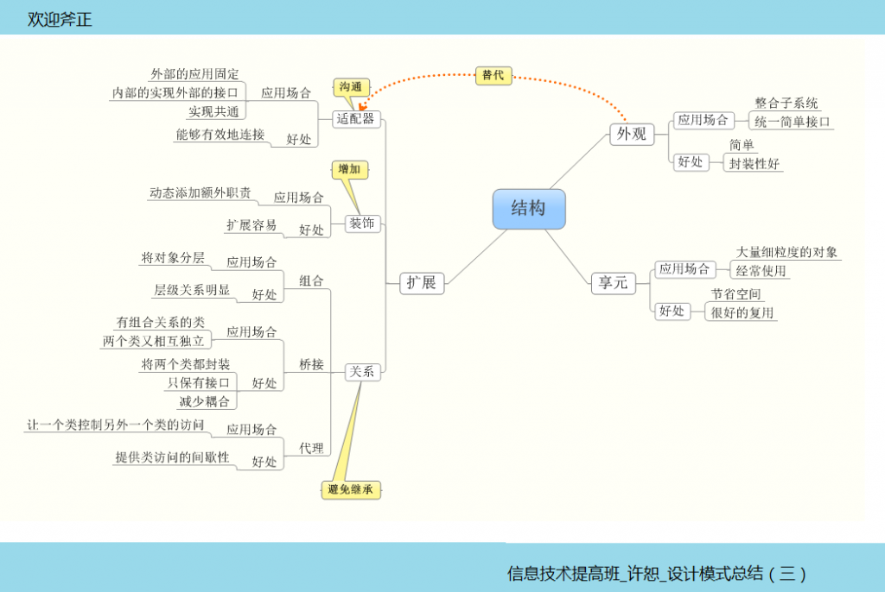

一个好的程序，有一个公用标准，叫高内聚，低耦合，但是，这是一个度的把握，再高的内聚性也避免不了沟通和交际，一味地抽象，继承是不科学的，我们应该寻找一种更好地解决方法，恰恰在这类设计模式，前人已经替我们做好了铺垫。
结构？什么是结构，在建筑上是承重的部分，意思就是骨架，只有支好一个好的骨架，才能让我们更有效的工作，在面向对象的设计中，类是一根根骨头，将这些东西连接起来的是“关系”，怎么处理这些关系是我们现在这种设计模式要学习的！

还是老样子，具体的例子大家去看书就ok，这里咱们谈谈扩展的两种知识：
一：聚合和组合（或者称为合成）
聚合，是种较弱的关系，例如足球场和观众，就是聚合的关系，他们互相独立，有一场足球赛的时候，他们才聚合到一起。
组合，是种较强的关系，例如人与四肢，人和四肢是不可分割的一部分，他们不以意志转移为转移。
再编程中，这两种关系帮助我们拜托了过多继承带来的困扰！
具体应用：
聚合
//抽象软件
abstract class Soft
{
public abstract void Run();
}
//游戏
class Game : Soft
{
public override void Run()
{
Console.WriteLine ("运行手机游戏！");
}
}
//通讯录
class AdressList : Soft
{
public override void Run()
{
Console.WriteLine ("运行手机通讯录！");
}
}
//抽象品牌
abstract class Brand
{
protected Soft soft;
//设置软件
public void SetSoft(Soft soft)
{
this.soft = soft;
}
public abstract void Run();
}
//品牌N
class BrandN : Brand
{
public override void Run()
{
soft .Run ();
}
}
//品牌M
class BrandM : Brand
{
public override void Run()
{
soft.Run ();
}
}
二：Hashtable
它的中文名字叫哈希表，他是通过key值来控制存入其中的对象，它是种容器，能够方便检索，快速查找，简单的理解就是这样，我们来看看应用
using System; using System.Collections; //使用Hashtable时，必须引入这个命名空间
class hashtable
{
public static void Main()
{
Hashtable ht=new Hashtable(); //创建一个Hashtable实例
//key值唯一,value值可以重复.
ht.Add("E","e");//添加key/键值对
ht.Add("A","a");
ht.Add("C","c");
ht.Add("B","b");
string s=(string)ht["A"];
if(ht.Contains("E")) //判断哈希表是否包含特定键,其返回值为true或false
Console.WriteLine("the E key:exist");
ht.Remove("C");//移除一个key/键值对
Console.WriteLine(ht["A"]);//此处输出a
ht.Clear();//移除所有元素
Console.WriteLine(ht["A"]); //此处将不会有任何输出
}
}
设计模式的两种类型问题，已经有相对较好的解答，在下一篇博客里我们一起来看看，拥有模式最多的行为模式类型！